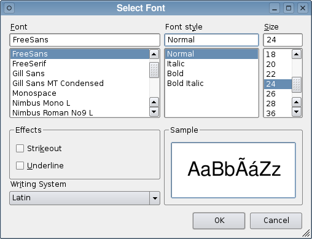

| Home · All Classes · Main Classes · Grouped Classes · Modules · Functions |
The QFontDialog class provides a dialog widget for selecting a font. More...
#include <QFontDialog>
Inherits QDialog.
The QFontDialog class provides a dialog widget for selecting a font.
The usual way to use this class is to call one of the static convenience functions, e.g. getFont().
Examples:
bool ok;
QFont font = QFontDialog::getFont(
&ok, QFont("Helvetica [Cronyx]", 10), this);
if (ok) {
// the user clicked OK and font is set to the font the user selected
} else {
// the user canceled the dialog; font is set to the initial
// value, in this case Helvetica [Cronyx], 10
}
The dialog can also be used to set a widget's font directly:
myWidget.setFont(QFontDialog::getFont(0, myWidget.font()));
If the user clicks OK the font they chose will be used for myWidget, and if they click Cancel the original font is used.

See also QFont, QFontInfo, and QFontMetrics.
Executes a modal font dialog and returns a font.
If the user clicks OK, the selected font is returned. If the user clicks Cancel, the initial font is returned.
The dialog is constructed with the given parent. initial is the initially selected font. If the ok parameter is not-null, *a ok is set to true if the user clicked OK, and set to false if the user clicked Cancel.
This static function is less flexible than the full QFontDialog object, but is convenient and easy to use.
Examples:
bool ok;
QFont font = QFontDialog::getFont(&ok, QFont("Times", 12), this);
if (ok) {
// font is set to the font the user selected
} else {
// the user canceled the dialog; font is set to the initial
// value, in this case Times, 12.
}
The dialog can also be used to set a widget's font directly:
myWidget.setFont(QFontDialog::getFont(0, myWidget.font()));
In this example, if the user clicks OK the font they chose will be used, and if they click Cancel the original font is used.
This is an overloaded member function, provided for convenience.
Call getFont(ok, def, parent) instead.
The name parameter is ignored.
This is an overloaded member function, provided for convenience.
Call getFont(ok, parent) instead.
The name parameter is ignored.
This is an overloaded member function, provided for convenience.
Executes a modal font dialog and returns a font.
If the user clicks OK, the selected font is returned. If the user clicks Cancel, the Qt default font is returned.
The dialog is constructed with the given parent. If the ok parameter is not-null, *a ok is set to true if the user clicked OK, and false if the user clicked Cancel.
This static function is less functional than the full QFontDialog object, but is convenient and easy to use.
Example:
bool ok;
QFont font = QFontDialog::getFont(&ok, this);
if (ok) {
// font is set to the font the user selected
} else {
// the user canceled the dialog; font is set to the default
// application font, QApplication::font()
}
| Copyright © 2006 Trolltech | Trademarks | Qt 4.1.5 |